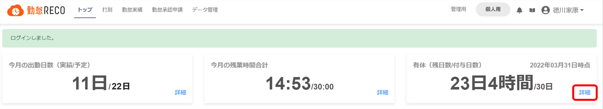
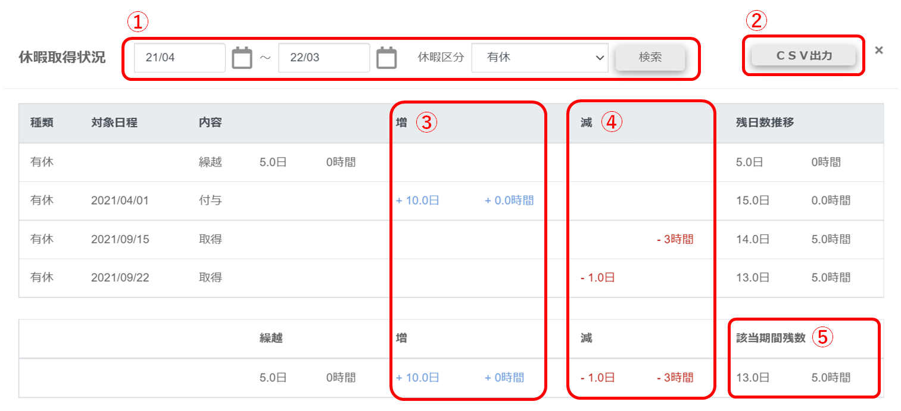

休暇取得状況を確認する
個人用トップ画面で「有休（残日数/付与日数）」の［詳細］をクリックする

「休暇取得状況」画面が表示されます。

-
検索
確認したい期間、および休暇区分を選択して［検索］ボタンをクリックします。
初期設定では、閲覧している年度の期間が表示されています。特定の期間の休暇取得状況を確認したい場合は、をクリックして期間を指定してください。
-
CSV出力
クリックすると表示されている情報をCSV形式のファイルにまとめてダウンロードできます。
-
増
付与された休暇日数が青で表示されます。一番下の行は合計付与数です。
-
減
取得または失効した休暇日数が赤で表示されます。一番下の行は合計取得／失効数です。
-
該当期間残数
表示されている期間の休暇残日数/時間です。
ヒント
・勤怠実績に「休日出勤（振替日：未指定）」が登録されると「代休」が付与され、「休日出勤（振替日：日付指定あり）」が登録されると「振替休日」が付与されます。
・年度末時点の有休残数を表示するため、未来日の有休も表示されます。
・「申請機能を使用、かつ勤怠更新を使用しない」設定の場合、申請承認が完了しただけでは勤怠実績が更新されないため、取得有休には表示されません。
-